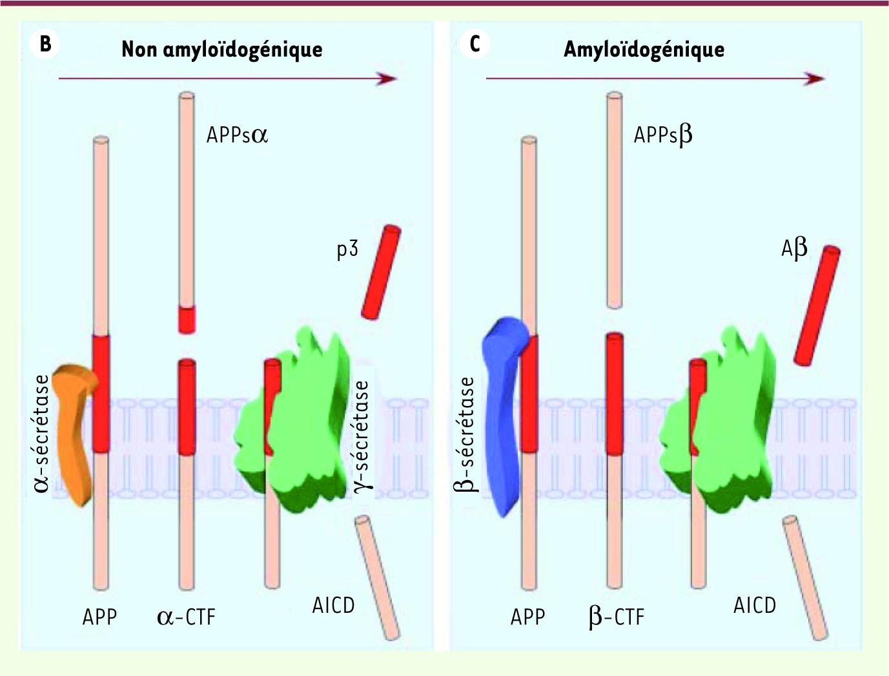

Introduction à la biologie d'Alzheimer
La maladie d'Alzheimer est une maladie neurodégénérative, caractérisée par l'accumulation de deux types de protéines : les protéines Aβ et les protéines Tau. Cette accumulation s'intensifie au cours des stades de la maladie et peut finir par se propager au sein de tout le cerveau.
La protéine Béta-Amyloïde
La protéine béta-Amyloïde est un peptide de 38 à 43 acides aminés, c'est donc une protéine de petite taille, qui est naturellement présente dans notre cerveau et qui diminuerait la communication synaptique entre les neurones. Son action aurait pour effet d'empêcher la capture de choline, composant indispensable à la synthèse d'acétylcholine. L'acétylcholine est quant à elle un neurotransmetteur impliqué dans la mémorisation.
|

Source de l'image : https://www.medecinesciences.org |

Source de l'image : http://www.ipubli.inserm.fr |
|---|
Cette protéine proviendrait du clivage enzymatique de l'APP (Amyloid Precursor Protein), qui est une protéine transmembranaire que l'on retrouve au niveau de la membrane des neurones. Une fois l'APP clivée, elle peut conduire à deux formes de béta-Amyloïdes : Aβ42 et Aβ40. C’est la forme Aβ42 qui est remarquée en majorité dans les plaques amyloïdes dans le cerveau d’un malade atteint d'Alzheimer. La figure de gauche ci-dessus présente ce qu'il se passe lors du clivage de la protéine APP. D'un côté est représentée la voie non amyloïdogénique, c'est-à-dire la voie qui aurait lieu en temps normal et qui ne conduirait pas à la constitution de plaques amyloïdes. Dans ce cas-là, on observe que l'enzyme \(\alpha \)-sécrétase clive l'APP au milieu de la partie rouge, correspondant en réalité au peptide Aβ. Ainsi, lorsq'une seconde enzyme (la \(\gamma \)-sécrétase) vient cliver le restant de la protéine, la partie libérée dans le milieu extracellulaire est le peptide Aβ sous sa forme Aβ40. Dans la maladie d'Alzheimer, on soupçonne que ce soit la voie amyloïdogénique qui ait lieu. Celle-ci implique d'abord l'enzyme \(\beta \)-sécrétase pour cliver l'APP. Cette enzyme sépare la protéine avant la partie rouge et conserve le peptide Aβ en entier. C'est pour cela qu'après le passage de la \(\gamma \)-sécrétase, c'est le peptide sous sa forme Aβ42 qui est libéré dans l'espace extracellulaire.
La forme Aβ42 ainsi libéré n'est pas stable et va chercher à s'aggréger avec d'autres peptides Aβ pour se structurer en feuillets-β. Comme illustré sur la figure à droite ci-dessus, les feuillets-β, en s'empilant, donneront des oligomères, puis des fibrilles, et enfin à plus grande échelle des plaques amyloïdes. Ce sont ces plaques que l'on observe chez les patients atteints d'Alzheimer. Elles peuvent conduire à une dégénérescence neurofibrillaire (abrégé DNF) ou à une inflammation locale des tissus cérébraux. C'est ainsi que l'accumulation de peptides autour des neurones devient responsable de leur mort progressive. C'est cette accumulation de protéines béta-Amyloïdes autour de la membrane de neurones que l'on avait pour objectif de représenter dans la partie Modélisation de ce projet.
Il est possible que dans les agglomérats initiaux de la maladie, seules les Aβ42 soient présentes. Des tests in vitro ont été réalisés, et les chercheurs ne trouvent pas de différence de présence entre les deux formes de béta-Amyloïdes. Cependant, il faut savoir qu'une plus grande toxicité a été observée pour un ratio Aβ42/Aβ40 plus grand.
La protéine Tau

Tau: « Tubulin Associated Unit ». Le rôle des Protéines Tau est de participer à l'architecture des neurones et à leur stabilité. Lorsqu'elles sont associées aux microtubules, elles permettent la stabilisation de leurs composants au cytosquelette de par leur phosphorylation. Au sein du neurone, les microtubules servent à transporter les matériaux synthétisés par le corps cellulaire vers les terminaisons nerveuses et à en maintenir la forme.
Les pathologies liées à des anomalies de la protéine Tau sont des tauopathies, et engendrent des démences parmi lesquelles se trouve la maladie d’Alzheimer. Une tauopathie se définit par l'accumulation anormale de protéines Tau. Ce mauvais fonctionnement des protéines Tau est lié à un excès de phosphorylation (l'ajout de groupements phosphate), entraînant l'agrégation des protéines entre elles : des amas de protéines Tau se forment. Cela induit une désorganisation des neurones en une dégénérescence neurofibrillaire, qui peut entraîner la mort cellulaire (dégénérescence cellulaire).
C'est pourquoi la protéine Tau fait partie des cibles thérapeutiques pour la recherche de nouveaux traitements contre la maladie d'Alzheimer.
Source de l'image: https://fr.wikipedia.org
La formation d'agrégats :
Dans le cas d’Alzheimer, la béta-Amyloïde s’agrège et se dépose sous forme de plaques d’abord dans l’hippocampe (qui joue un rôle majeur dans la mémoire et le repérage spatial) et dans le lobe temporal (qui joue un rôle dans les fonctions du langage, ainsi que de la mémoire). Puis il s’agrège dans le lobe frontal (mouvement, langage, planification) et pariétal (intégration des informations). On ne sait pas si le nombre de plaques formées joue sur la sévérité de la maladie. Ce serait plutôt la perte de synapses au début de la maladie qui serait important. La protéine Tau, quant à elle, forme des amas de dégénérescences neurofibrillaires.
Les solutions thérapeutiques existantes
Aucun traitement ne permet à l’heure actuelle de guérir de la maladie ou de stopper son évolution. Certains médicaments sont toutefois disponibles sur le marché. Dans les meilleur des cas (malheureusement trop rares), la famille, le patient et le spécialiste vont constater une amélioration, avec une meilleure qualité de vie et des performances cognitives améliorées. Le plus souvent, on observe grâce au traitement un ralentissement dans l'évolution de la maladie et une diminution de certains troubles du comportement.
Deux familles de médicaments sont utilisées pour ralentir le développement des troubles cognitifs associés à la maladie d’Alzheimer :
- Les anticholinestérases : Ces médicaments ont un effet sur l’acétylcholine, substance fabriquée par les cellules nerveuses et qui agit sur la mémoire et l’apprentissage. Elle est ciblée et détruite au cours de la maladie d’Alzheimer. Les anticholinestérases ont alors pour rôle de ralentir la destruction de l’acétylcholine, améliorant ainsi le comportement du malade et ses gestes quotidiens. Les anticholinestérases sont prescrits aux stades léger et moyen de la maladie ;
- Les antiglutamates : Ces molécules agissent sur les récepteurs du glutamate, substance produite en excès par les cellules nerveuses des malades atteints d’Alzheimer, entraînant ainsi la destruction d’autres cellules, les cellules réceptrices. Les antiglutamates bloquent l’interaction du glutamate avec les cellules réceptrices, ce qui ralentit la perte de mémoire et le déclin des fonctions cognitives. Les antiglutamates sont prescrits aux stades moyen et sévère de la maladie.
Enfin, les thérapies non-médicamenteuses se développent de plus en plus : elles permettent d’améliorer le confort et le bien-être des malades et de freiner le développement des troubles.